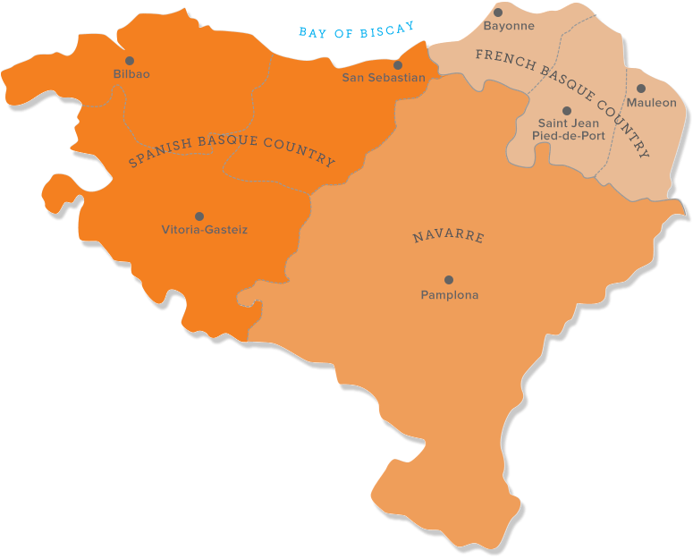

chapter10.1--handout
Background Information
Basque 巴斯克地区
We passed lots of Basques with oxen, or cattle, hauling carts along the road, and nice farmhouses, low roofs, and all white-plastered.（一路上驶过许许多多赶着牲口或牛车的巴斯克人，还有精致的农舍，屋顶很低，墙壁全部刷白。）
巴斯克地区位于比利牛斯山脉西部，比斯开湾沿岸，地跨西班牙和法国，该地区包括西班牙的巴斯克自治区（Autonomous Communities of the Basque Country）、诺瓦拉自治区（Navarra）和法国的北部巴斯克地区（Northern Basque Country）. 我们之前介绍过的圣塞巴斯蒂安（San Sebastian）就是位于巴斯克地区哦~

巴斯克人的样貌也与其他欧洲人有明显的不同——面孔狭长，鼻子高挺，肤色微黑，身材中等。一些学者的研究认为，他们不属于印欧人种。在血缘关系上与相邻的西班牙人、法国人及其他欧洲人没有丝毫联系。 “来历不明，家世复杂”是这个民族的一大特点。
与南欧诸国屡次被外族征服的历史不同，巴斯克长期保持自己的独立性，巴斯克人强悍的历史基因在以散漫慵懒著称的南欧性格里被誉为“南欧里的北欧人”，巴斯克语则被称为“上帝的语言”。
Pelota 回力球
Every village had a pelota court and on some of them kids were playing in the hot sun.（每个村庄都有一片回力球场。在有些球场上，孩子们顶着烈日在玩耍。）
回力球是巴斯克人玩的传统球戏，也被认为是西班牙的“国技”。运动员在三面围墙的球场上，一只手臂戴柳条编织的长勺形手套，将硬橡皮球掷向前墙并接住从前墙弹回的球。
回力球最引人注目的恐怕就是球手戴的手套了，它最早是柳条编织而成的。后来发展成了皮革，从南美洲引进橡胶以后，接球手套被改进成了橡胶材质，可有效地加强球的弹跳能力从而加速球戏。
回力球的体积小于棒球，硬度大于高尔夫球，所以速度也非常快，可以达到时速150-170英里。自1924年引进后，回力球便成为迈阿密最热门的运动，很多人为了看球而去，有的人为了出名而去看球，但如今这项运动已经没落。
Vocabulary
frontier
n. 边疆；国界（a line that separates two countries, etc.; the land near this line） 前沿，尖端，新领域（the limit of sth）
原文：We crossed the Spanish frontier.
我们跨过西班牙的边境线。
💧frontier 可以指“边境线”（border, boundary），或者是靠近边境线的这一片区域（“边疆”），比如“边陲小镇”就可以说是a frontier town.
💧frontier 从“边界”还引申出了“前沿”这个含义，一般指某个学科或某个领域的尖端，比如“开拓科学新领域”就可以说：to push back the frontiers of science.
furrow
n. 皱纹（wrinkle）；犁沟，车辙（a wide deep line made in the surface of something）
v. 使起皱纹（to pull your brows together）；犁田，开沟（to make a furrow in the earth）
原文：...and we saw a whole new range of mountains off to the south, all brown and baked-looking and furrowed in strange shapes.
我们看见南边展现出另一道山脉的全貌，全部呈褐色，像是被烤焦了一般，沟壑千姿百态，蔚为奇观。
💧这里furrow是指土地形成了一道道的沟壑；furrow还可以用来描写人紧皱眉头的表情，比如：Quin’s brow furrowed in concentration.
奎因双眉紧锁，全神贯注。
Crush Your Problems
1、I was not at all sure Mike's rods would come from Scotland in time, so we hunted a tackle store and finally bought a rod for Bill up-stairs over a drygoods store.
迈克的钓竿能否按时从苏格兰捎来，我完全没有把握，因此我们到处找钓鱼用具商店，最后在一家绸缎店楼上给比尔买到一根。
💧表达精讲
hunt 是一个很生动的表达，它的本义是指“打猎”，用它来表示“搜寻，寻找”（search）的时候可以反映出一种很迫切并渴望的心态，比如：Detectives are busy hunting for clues.（侦探们忙着寻找线索。）
💧知识拓展
①tackle 我们在前面已经介绍过了，也就是指“（一整套的）钓鱼用具”；
②dry goods 很多人会按照字面理解为“干货”，虽然它的确可以表示晒干或风干的制成品，但跟我们通常意义上的干货不一样。drygood主要指烟草、茶叶以及咖啡豆这一类干货。另外它还可以指“纺织品”（textiles），比如衣服、床单、窗帘等，也可以称作soft goods（这样命名主要是为了和五金店hardware或者杂货店grocery区分开~）
2、We paid for the beers, we matched and I think Cohn paid, and went up to the hotel.
我们付了啤酒钱（我们抛硬币赌了一下，结果好像是科恩付的钱），之后步行到旅馆。
💧表达精讲
match 在这里既不是表示“匹配”也不是“竞争”的意思，它在俚语里指“抛硬币”（to flip or toss (coins) and compare exposed faces），所以这里就是Jake一行人通过抛硬币来决定谁付钱。这种说法比较过时了，现在一般直接说flip/toss a coin.
💧知识拓展
再给大家拓展一下，硬币的正反面是用heads和tails来表示哦~（head其实就表示正面上的“头像”），比如：The captain called heads as usual — and the coin came down tails.（队长像以往一样叫了正面—可硬币反面朝上地落了下来。）
3、It was a big, closed car, with a driver in a white duster with blue collar and cuffs, and we had him put the back of the car down.
这是辆有篷的大汽车，司机穿一件蓝领、蓝袖口的白色风衣，我们吩咐他把后篷放下。
💧表达精讲
①closed 在这里指“带篷的车”，closed表示“封闭的”，和没有篷的开放式轿车区分开；
②duster 可以通过构词来猜测它的意思~它的作用其实就是清扫灰尘，所以可以指“抹布”，或者是清洁时穿的“防尘罩衫”；
③cuff 可以指衣服袖子的口或裤腿的翻边（也叫turn-up）. 另外cuff如果以复数形式cuffs出现，还可以指“手铐”，和handcuffs一个意思。
4、In the Basque country the land all looks very rich and green and the houses and villages look well-off and clean.
在这巴斯克地区，土地看来都很肥沃，一片翠绿，房屋和村庄看来富裕而整洁。
💧表达精讲
well-off 表示“有钱的，富裕的”（having a lot of money, or enough money to have a good standard of living）; 如果后面再加上for sth就是指“有充裕的某物”，比如：We’re well-off for public transport here.（我们这里公共交通发达。）
英语里说一个人身在福中不知福就用到了这个词：You don’t know when you’re well-off.
5、He was carrying a long staff, and he had a kid slung on his back, tied by the four legs, the head hanging down.
他手拿一根长棍，背上背着一只捆绑着四条腿、耷拉着脑袋的小山羊。
💧表达精讲
①staff 除了表示“员工”以外，还可以指“手杖，拐杖”（a long thick stick to help you walk）. 大家还可以猜一猜“the staff of life”的意思，这个短语直译是“生命之杖”，支撑一个人生命的东西也就是“面包”啦~
②kid 是指“小山羊”，也可以表示“小山羊皮”，比如kid boots就是“小山羊皮靴”；
③slung 的原形是sling, 表示“（松松垮垮地）挂，吊，悬”，比如：Dave wore a tool belt slung around his waist.（戴夫腰上搭了一条工具带。）这里形容这个老人很随意地把小山羊挂在背上。
Content Analysis
今天的内容情节很简单，Jake, Bill和Cohn出发去西班牙前在巴约讷（Bayonne, 在法国西南的小镇，靠近和西班牙的边界线）简单逛了逛，然后租了一辆车前往潘普洛纳（Pamplona）. 但越是在平淡无奇的故事发展中，越见作者在叙事艺术上的高超技巧。
比如我们在阅读的时候会很自然地代入人物角色，并且不自觉地相信里面展示的所有对话和动作都是真实发生过的。那么作者是如何做到一点呢？首先是作者在叙事上毫无“修饰”或“加工”的痕迹——
💧Clue 1: By presenting the events without editing.
Evidence 1: Cohn made some remark about it being a very good example of something or other, I forget what. It seemed like a nice cathedral, nice and dim, like Spanish churches.
科恩说，它是什么式教堂的一个非常出色的范例，我记不得是什么式了。这教堂看来很讲究，像西班牙教堂那样精巧而阴暗。
这里所说的教堂是巴约讷当地非常著名的圣玛利亚大教堂，建筑风格为哥特式。其实作者大可不必拐弯抹角，直接点明这是一座什么样的教堂不是更准确吗？为什么要留下模糊不清的叙述呢？我们可以试着想象一下，一个每处细节都清晰完美的故事，虽然无懈可击滴水不漏，但也免不了 有明显的“加工”和“修饰”的味道。而如果尊重事件发生时候的状态，并且去原模原样地展现出来，就更加能有一种真实感（就像一手的资料，虽然会很粗糙凌乱，但也是最贴切事实的）。
另外很重要的一点就是保留一些看起来很鸡毛蒜皮、甚至是毫无必要的细节——
💧Clue 2: By preserving trivial details.
Evidence 1: The man who sold the tackle was out, and we had to wait for him to come back. Finally he came in, and we bought a pretty good rod cheap, and two landing-nets.
卖钓鱼用具的人出去了，我们只得等他回来。此人终于回来了，我们很便宜地买到一根相当好的钓竿，还买了两张抄网。
“卖钓鱼用具的人不在店里”这个细节对整个故事来说几乎可以说是完全不必要的，反而还会显得很赘余，甚至有流水账的感觉。但从另一面来想，这个细节也正好证明了故事的真实性（毕竟如果是没有发生过的事情，谁会刻意浪费笔墨去写一堆“废话”呢？）
当然这样的例子在文中还有很多，比如三人吃完早饭后结账的一个细节：
Evidence 2: We paid for the beers, we matched and I think Cohn paid, and went up to the hotel.
我们付了啤酒钱（我们抛硬币赌了一下，结果好像是科恩付的钱），之后步行到旅馆。
“结果好像是科恩付的钱”也是一个很模糊的细节。单纯从情节角度考虑，Jake连究竟是不是Cohn付的钱都记不清了，那么这句话有什么作用呢？它创造了一个更贴近真实生活的场景（当Jake在回忆发生过的事情并记录下来的时候，肯定会有不确定的地方），所以这里也是作者试图让读者增加对Jake作为叙述者的信任，同时让整个故事更具可信度。
这里列举的两个方面只是海明威写作技艺里的冰山一角，他的干练、简洁和客观的文风其实就渗透在故事的字里行间，大家也可以多读多品味哦~
Today's Bonus
💧士兵帽的流行史
今天的文章里Jake一行人在过境的时候，有一段分别对西班牙和法国哨兵的描写，其中最引人注目的可能就是他们戴的帽子了。Jake提到西班牙马枪骑兵戴的是黑漆皮的波拿巴帽（Spanish carabineers, with patent-leather Bonaparte hats），而这边的法国士兵戴的则是一种平底帽（and on the other fat Frenchmen in kepis）.
其实各个国家的士兵在戴帽子上都有不同的传统和流行趋势，比如英国士兵经常戴的就是一种高筒熊皮帽。那么士兵们的帽子除了修饰外观，还有什么特别的目的和用途呢？今天的彩蛋我们就一起来看看士兵帽的流行史~
1. Bonaparte hat 波拿巴帽（拿破仑帽）
这种帽子也叫二角帽，考克帽，本来是当地皇族们非常喜欢的饰物。而它之所以又叫波拿巴帽（波拿巴是拿破仑的姓）正是因为后来拿破仑本人非常喜欢戴这种帽子。据说原因是他的身材太矮，这种又高又大的拿破仑帽正好弥补了这一缺陷。
1789年的法国大革命后这种帽子取代三角帽成为流行样式，广泛被欧洲与美国的海、陆军所采用。在许多拿破仑的肖像画中也可以看到身着戎装、头戴双角帽的拿破仑。
如今巴黎荣军院里面还收藏着拿破仑戴的这顶二角帽。
2. Tricorne 三角帽
三角帽的历史要比上面提到的双角帽（也就是波拿巴帽）早。它发源于欧洲，自17世纪后期盛行至18世纪，在极盛期时不但是一般男性知识份子的标准行头，也是军人戎装的标准配件之一。
除了因为拿破仑的影响力而被双角帽取代外，三角帽的人气逐渐式微的另一个原因是它在佩戴时一般尖角朝前，对于左肩扛枪的士兵们来说会遮挡视线。
3. Side cap 船形帽
船形帽其实是双角帽在帽形变小、帽边变软后的一种变体，也就是今天的国际帽。船形帽又分为美国式和俄国式，美国式短，俄国式长。戴着美观大方，同时也较好地解决了官兵夏季戴大檐帽太重、太热和不便携带的问题。
另一个说法是，船形帽的诞生跟空军这一军种的建立有关。因为最初的空军飞行员都是从步兵、骑兵、炮兵等各兵种中选送去学习飞行的。而步兵、骑兵、炮兵的军帽通常都是大沿帽，但戴大沿帽飞行不太方便，飞行时迎面吹来的气流会把它从头上刮跑。另外，通过硬帽檐戴飞行风镜也不方便。
因此，最早的一种航空帽是无帽檐的轻便小帽。由于这种帽子的形状，能使气流环绕它平稳地流过。所以人们把这种帽子叫作驾驶员帽（flight cap, 这个一般是美国人的叫法）或者干脆称为船形帽。
4. Beret 贝雷帽
贝雷帽的历史最早可以追溯到15世纪，当时法国西南部的牧羊人曾经喜欢戴一种用棕色羊毛纺织出的圆形无沿软帽。这种帽子戴在头上可以遮风挡雨，脱下来可以擦汗，放在地上当坐垫。
后来，法国和西班牙交界处的巴斯克人也开始戴这种帽子，并被人们称作“巴斯克贝雷帽”。贝雷帽具有便于折叠、不怕挤压、容易携带、美观等优点，还便于外套钢盔。通常作为一些国家军队的别动队、特种部队和空降部队的人员标志，例如：英国红色贝雷帽部队（红魔部队）。
此外，黑色贝雷帽也是以成功掩护敦刻尔克大撤退而闻名于世的英国名帅蒙哥马利（Montgomery, 1887-1976）的独特标志哦~他的帽子上带有两颗帽徽，一颗是将军徽，体现了将帅的至高权威，另一颗是和士兵们一样的装甲兵徽章，表明自己和全体士兵们同在。
5. Bearskin 熊皮帽
熊皮帽至今有200多年的历史，它象征着英国强盛的军力。但是熊皮帽最早并不是起源于英国，它在17世纪是为欧洲军队里的掷弹兵设计的。当时法国拿破仑的卫队和近卫掷弹骑兵（The Grenadier Guards）戴这种熊皮高帽，以显得更高、更具威慑力。
英国士兵1815年首次获许戴上熊皮帽，以庆祝在滑铁卢战役中击败法国拿破仑卫队。英军把它当作礼服一部分，传承至今。威风凛凛的熊皮帽让人觉得英国皇家卫队高大威猛这和人类早期历史中佩戴狮鬃盔是一个道理。
但熊皮帽一般高三十厘米，重量超过一斤，这也害苦了英国皇家卫队的士兵们。尤其在夏天时，士兵们形容犹如把脑袋伸进烤箱一样。所以几乎每年都会有皇家卫队士兵晕倒的新闻。据说很多士兵为了提高自己的耐热能力，还会去练高温瑜伽。
熊皮帽带来的另一个争议是它的制作通常是一顶帽子需要两头黑熊的皮，因此也遭到动物保护者协会的集体反抗。但是直到2011年，英国国家炮兵队和其他部分才开始停止使用黑熊皮，而以人造皮草代替。